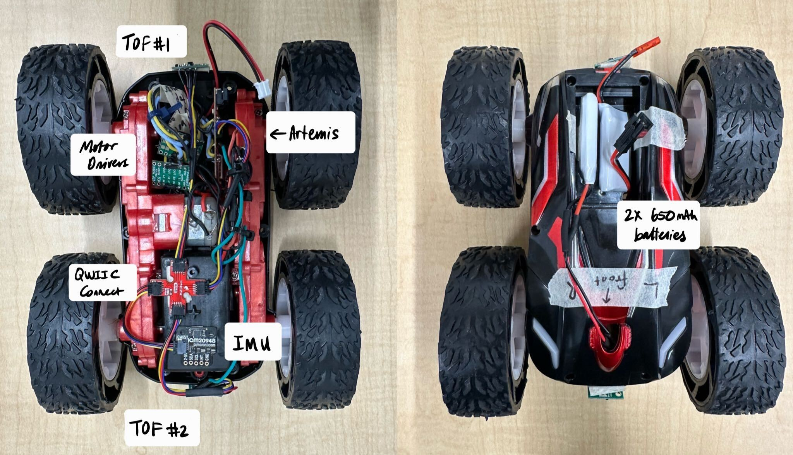

Lab 4 Motor Drivers, Open Loop Control
The purpose of this lab was to finish installing hardware in the robot, starting with configuring the motor drivers and then integrating all boards. After this, we characterized the open loop robot system by driving around.
Prelab
Motor Driver Wiring
I started the lab by figuring out how to wire up each H-Bridge/motor driver. The datasheet helped me to understand the functionality of each pin on the board. It is worth noting that in my TOF lab (Lab 3), I also included a wiring diagram. This diagram was actually incorrect, as it made use of the VMM pins on the motor drivers, which in reality do not serve a function. An updated wiring diagram is shown below. The following pins are used.
- Ground Pins: 1 to artemis and 1 to negative battery lead
- Vin: positive battery lead
- AIN1 & BIN1: linked to each other in series, then to Artemis pins 0 and 4
- AIN2 & BIN2: linked to each other in series, then to Artemis pins 1 and 5
- AOUT1 & BOUT1: linked to each other in series, then to positive motor lead
- AOUT2 & BOUT2: linked to each other in series, then to negative motor lead
The A and B In/Out pins on the motor drivers are coupled together in order to be able to provide enough current to the motors. Each board powers one motor, and each motor powers two wheels. Without daisy chaining these pins together, current passing through would be halved. Not all GPIO pins on the Artemis are PWM capable; specifically, 8 and 10 are not. This influenced my decisions, as I was tempted to do Pins 5-6-7-8 for some pizzazz.

Battery Discussion
The motor drivers and the Artemis are each powered by their own 650 mAh batteries. This is partially because the ideal current draw for the motors is much higher than the Artemis. Separating the paths of current also makes for less noisy signals.
PWM Tests
Before soldering the motor drivers to the motors themselves, I wanted to verify that they worked in both directions. Powering one pin HIGH and the other LOW would allow the motor to go either forward or backwards, so I tested both configurations for each motor driver, as well as testing them simultaneously.
To do these tests, I hooked up the Vin/Ground pins on the motor drivers up to a DC power supply. Based on the datasheet as well as known information about the motors themselves, I chose to supply the drivers with 3.7V, even though they accept up to 10. Then, I hooked up the OUT1 and OUT2 pins to the oscilloscope probes. On the code side, I was inspired by Bhadra Bejoy's (2023) and Robby Huang's (2022) idea to run a loop that incremented the PWM output from 0 to 255. I did this for both channels, as well as both motor drivers. The second video embedded below shows one motor driver going forward, and the other in reverse, simulating a turn! The code for that looked like this:
void setup() {
pinMode(4, OUTPUT);
pinMode(5, OUTPUT);
pinMode(0, OUTPUT);
pinMode(1, OUTPUT);
}
void loop() {
analogWrite(4,0);
for (int i = 0; i < 255; i++) {
analogWrite(4,i);
analogWrite(5,0);
analogWrite(0,255-i)
analogWrite(1,0);
delay(10);
}
}

Testing Individual Motors
After verifying the soldered connections, I hooked up each motor to their respective motor drivers, plus the power supply to make sure that the motors were receiving sufficient current. An example of the type of code I used to do this is shown below, plus a video. The video depicts performance once the batteries were soldered, however code was the same with the power supply.
void setup() {
pinMode(4, OUTPUT);
pinMode(5, OUTPUT);
pinMode(0, OUTPUT);
pinMode(1, OUTPUT);
}
void loop() {
analogWrite(4,0);
analogWrite(5,200);
delay(5000);
analogWrite(4,0);
analogWrite(5,0);
}
Minimum PWM to Overcome Friction
I incrementally increased PWM by 5 until I could see the robot start to move after being placed on the floor, With a fresh battery this was around 40-45 PWM, but with a worn battery this was anywhere from 50-65 PWM. I am considering putting tape on my robot wheels to reduce the friction/rolling resistance it experiences and overall ease the load on the motors. That was for starting the car from rest. If the robot is already moving and stops, only about 35 PWM was needed to accelerate from a coasting state.
For turning, a higher PWM was needed. When I tested this, it took about 70 PWM to start turning from a resting state, with a fully charged battery.
Open Loop Control
Installation
First, I integrated everything into the robot. I tried to braid cable as much as possible to reduce noisy signals, and ziptie wires together for cleanliness. I am for now choosing to have one TOF in the front and one in the back- this means that I only need to turn the robot 180 degrees to get 360 degrees worth of data. After taking this photo, I used electrical tape to further clean up the wiring and keep things out of the way...
System Drift
The goal of open loop control was to drive the robot forward approximately 6ft/2m in as straight a line as possible. I ran the car at 120 PWM for roughly 3 seconds, which actually ended up being greater than 6 feet, but still showcased that the car had a tendency to drift towards the right. At around the 4.5-5ft mark in the video below, I see the robot start to drift, and by 6 ft it is about 1 foot away from the guiding line.
Adding a Calibration Constant
The observed drift prompted me to add a calibration constant which would multiply the PWM of the left motor to roughly match that of the right side and remove the drift. I tuned this by hand, as using the Gyroscope/IMU would turn the system into a closed loop one. Thus, I mostly did trial and error until I had significantly reduced the drift. This was challenging because as the battery drained, the characteristics of the drift would change and push me to pick a calibration constant too high that would actually overcorrect with a fully charged battery. I ended up settling with a constant of 1.6, which seemed to mostly reduce the drift. Additional tuning may be needed, however I expect PID to help with this in the future. I also introduced #define to save memory on the Artemis for data collection in the future.
#define motorR1 0
#define motorR2 1
#define motorL1 4
#define motorL2 5
#define calibFactor 1.6
void
setup()
{
pinMode(motorR1, OUTPUT);
pinMode(motorR2, OUTPUT);
pinMode(motorL1, OUTPUT);
pinMode(motorL2, OUTPUT);
//Blink upon starting
pinMode(LED_BUILTIN, OUTPUT);
digitalWrite(LED_BUILTIN, HIGH); // turn the LED on (HIGH is the voltage level)
delay(500); // wait for a second
digitalWrite(LED_BUILTIN, LOW); // turn the LED off by making the voltage LOW
delay(500);
digitalWrite(LED_BUILTIN, HIGH); // turn the LED on (HIGH is the voltage level)
delay(500); // wait for a second
digitalWrite(LED_BUILTIN, LOW); // turn the LED off by making the voltage LOW
delay(500);
delay(10000);
}
void loop()
{
driveStraightCalib(1,3000,100);
}
void driveStraight(int dir, int time, int pwm){
//Drive straight for x seconds
//Dir = 1 means forward
//Dir = -1 means backwards
if(dir==-1){
analogWrite(motorR1, 0);
analogWrite(motorR2, pwm);
analogWrite(motorL1, pwm);
analogWrite(motorL2, 0);
delay(time);
}
else{
analogWrite(motorR1, pwm);
analogWrite(motorR2, 0);
analogWrite(motorL1, 0);
analogWrite(motorL2, pwm);
delay(time);
}
//stop
analogWrite(motorR1, 0);
analogWrite(motorR2, 0);
analogWrite(motorL1, 0);
analogWrite(motorL2, 0);
}
void driveStraightCalib(int dir, int time, int pwm){
//Drive straight for x seconds
//Dir = 1 means forward
//Dir = -1 means backwards
if(dir==1){
analogWrite(motorR1, 0);
analogWrite(motorR2, pwm);
analogWrite(motorL1, pwm*calibFactor);
analogWrite(motorL2, 0);
delay(time);
}
else{
analogWrite(motorR1, pwm);
analogWrite(motorR2, 0);
analogWrite(motorL1, 0);
analogWrite(motorL2, pwm*calibFactor);
delay(time);
}
//stop
analogWrite(motorR1, 0);
analogWrite(motorR2, 0);
analogWrite(motorL1, 0);
analogWrite(motorL2, 0);
}
Adding turns
Once my straight driving was calibrated, I added in turning functions. The functions themselves were almost exactly the same as what was written for straight driving. However where straight driving paired pins 0 and 5 or 1 and 4, turning paid 0 and 4 or 1 and 5 to allow one side of the car to go backwards and the other forwards, resulting in a tight turn.
void turn(int dir, int time, int pwm){
//Drive straight for x seconds
//Dir = 1 means right
//Dir = -1 means left
if(dir==1){
analogWrite(motorR1, pwm);
analogWrite(motorR2, 0);
analogWrite(motorL1, pwm);
analogWrite(motorL2, 0);
delay(time);
}
else{
analogWrite(motorR1, 0);
analogWrite(motorR2, pwm);
analogWrite(motorL1, 0);
analogWrite(motorL2, pwm);
delay(time);
}
//stop
analogWrite(motorR1, 0);
analogWrite(motorR2, 0);
analogWrite(motorL1, 0);
analogWrite(motorL2, 0);
}
I then programmed my robot to drive forward, and spin around. I also told it to continue going just to make sure that the PWM signals did not conflict with each other after opposing movements. Admittedly the drift started to come back here, but I believe this is because my battery was dying by the time I recorded the video.
void loop()
{
driveStraightCalib(-1,3000,100);
delay(1000);
turn(-1,800,220);
delay(1000);
driveStraightCalib(1,3000,100);
}
Challenges- Issue with Pin 5
I noticed inconsistency with one side of my robot, in one specific direction. To me, this implied a soldering issue. I traced the issue back to pin 4 based on the direction and side of inconsistency. Essentially, if programmed to go for 3 seconds with PWM through pin 5, the left wheels would spin for maybe 1 second before stopping and stuttering, whereas the right side would keep going. I checked all of my connections, and visually they seemed sound, as well as braided my cables to hopefully reduce signal interference. Some debugging things I tried:
- Probing with multimeter to make sure the connection was sound (video shown below, but from earlier tests before board was soldered to motor to demonstrate the general technique)
- Isolating each pin and testing them by applying both high and low PWMs
- Redoing wiring to try and better separate the two motor drivers
- Battery replacement
- Visual solder inspection
None of this worked at first; So, I went to office hours to try and get some help with this. As it turns out, my soldered connections were not as solid as I believed. Specifically, pin 5's connection to the Artemis had a small gap in it where the solder had not melted through that I had not noticed before. I essentially re-checked all soldered connections while in office hours. Rather than add more solder, I reheated what I had (it was a bit globby) and let it melt into the wires more. Then, when I tested again (with a fresh battery as well), my problem had been solved! Luckily for me, when I ran the other open control commands, my calibration factor over 6 feet was the same. However, I am still looking to tune it more with PID.
Discussion
This lab gave me a lot of practice with soldering and forced me to think about where things would be placed within the robot. I thought that open loop control would be easy, but ended up finding a lot of challenges. Fixing the drift was not too hard, just difficult to keep consistent, but debugging my pin 4 issues was hard. With so many different factors such as the battery charge, friction from the ground, potential soldering issues, signal noise, etc. it was hard to figure out what the source of my issue was. I am excited to implement PID and try and get the robot to be more precise overall.
Bonus Dog Content
Part of my testing was done with Yen, a Guiding Eyes Dog in training :D. He was rather confused by the robot, though.